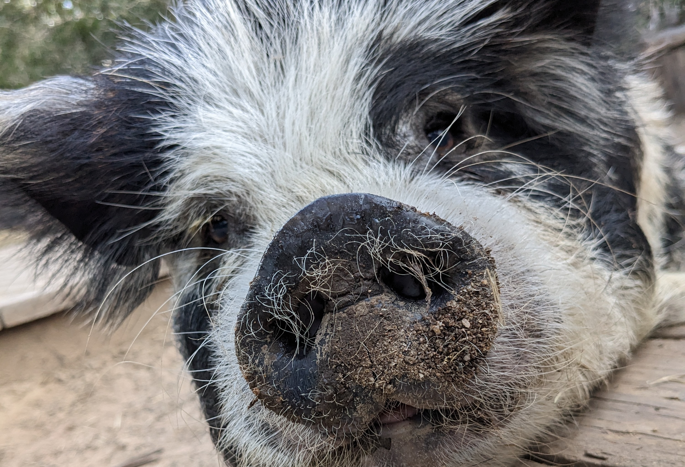
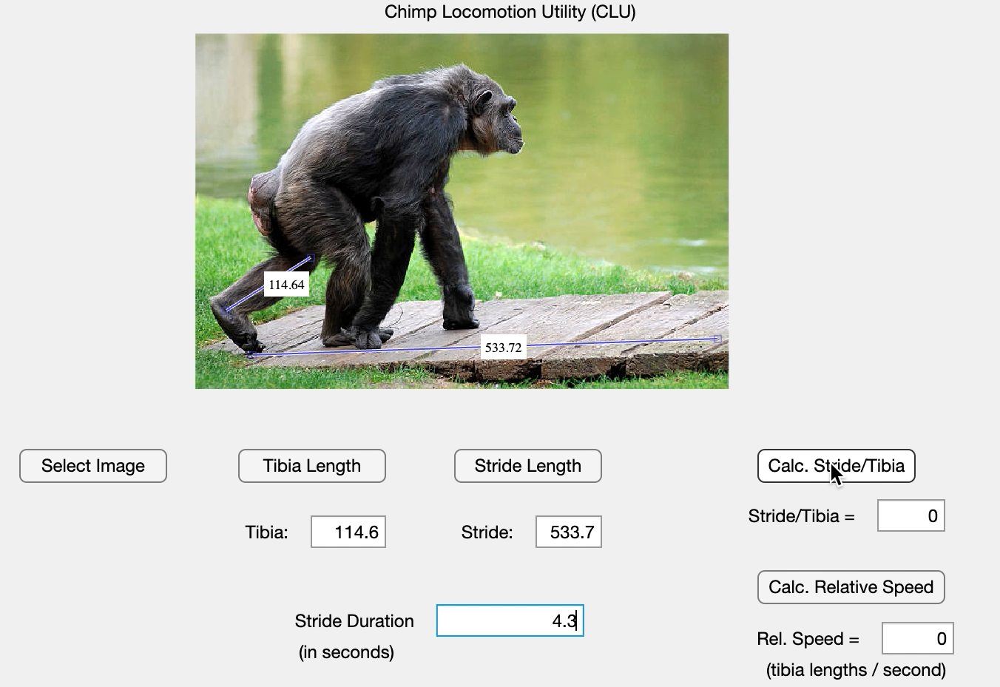

An investigation of the feasibility of using a thermal camera with
Python and R to noninvasively gather and process heart rate variability data from domestic pigs.

Programs I've created to solve a variety of small-scale problems or streamline workflows in laboratory settings with intuitive GUIs.
A representation of the emotional vectors underlying dialogue in a TV show using Python's Natural Language Toolkit.
A graphical visualization of changes in the use of colors over time in intro sequences to Hanna-Barbera's Scooby-Doo cartoons.